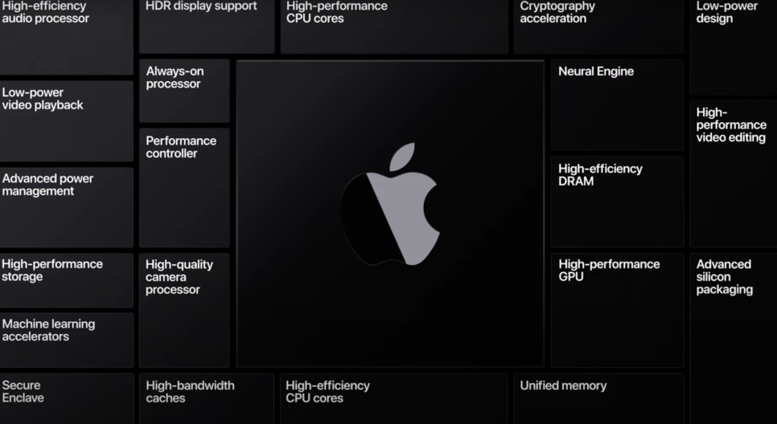

애플 IT 이슈 루머
MENUWWDC2020
현지 시각 6월 23일 애플 WWDC 2020이 개최되었는데요. 매년 6월 달에 개최되는 개발자 WWDC는 소프트웨어 업데이트로 하반기에 적용될 버전을 미리 맛보는 이벤트죠.
한눈에 보는 간단 요약
역시나 가장 눈에 띄는 것은 아이폰이 iOS14 업그레이드가 되면서 위젯 커스터마이징 및 영상을 보면서 카톡, 메모를 하는 등 멀티 기능이 강화되었습니다. 게다가 통화 모드 및 시리 화면이 더 이상 화면 전체를 가리지 않게 되었어요.
아이패드 또한 iPadOS14 버전 업되어 펜슬로 쓴 글자를 텍스트로 인식하는 스크리블 기능이 새로 생겼습니다. 댄스 모드, 손 씻기 인식이 탑재된 애플워치뿐만 아니라 에이팟 프로, 카탈리나에서 더욱 변화된 Mac OS Big sur, 자체 칩셋을 개발한 애플 실리콘도 화제인데요.
아이폰 iOS14
가장 변화가 많았던 소프트웨어는 바로 아이폰입니다. 가장 먼저 위젯 커스터마이징부터 살펴볼게요. 지금 쓰는 아이폰은 날씨, 스케줄 등 위젯을 확인하기 위해서 좌측으로 스와이프 해야 하죠. 그런데 이제 안드로이드처럼 본인이 원하는 크기, 위치로 위젯을 설정할 수 있습니다.
다음으로 App Library 기능도 눈에 띄는데요. 앱을 분류하고 카테고리에 맞게 정리하기 귀찮은 분들께 유용할 것 입니다. 앱 라이브러리는 비슷한 성격의 앱을 아이폰이 자동으로 정리해 준다고 합니다.
또한 홈 화면 숨김 기능을 새롭게 추가하여 나만 볼 수 있는 페이지를 설정할 수 있습니다.
이제 전화가 와도 시리를 불러도 전체 화면을 가리지 않게 되었습니다.
덕분에 인터넷을 하거나 웹툰을 볼 때 방해받지 않고 전화를 받을 수 있게 되었죠. 아이패드를 연동해서 사용하고 있는 저로서는 정말 불편했었는데 가장 기대되는 개선사항 중 하나입니다. 특히 아이패드는 그 큰 화면 전체를 통화 화면으로 덮기 때문에 정말 정말 불편했었죠.

이제 넷플릭스, 왓차, 유튜브 등을 보면서 다른 작업을 할 수 있는 PIP이 도입된다고 합니다. 이미 아이패드는 사용한 적이 있기 때문에 저는 익숙하지만 아이폰에서도 사용이 가능하면 정말 편리하겠네요.
다만 유튜브 프리미엄의 메인 특징이 멀티태스킹인데 이에 대해 이의를 걸진 않을지 두고 봐야 할 것 같습니다. 그 외에도 메시지 변화, NFC 활용, 시리 번역 강화 등 다양하게 업데이트될 예정이에요.
아이패드 iPadOS 14
아이패드 또한 더욱 유용하게 개선될 예정입니다. 그중 가장 인상적인 것은 바로 스크러블이죠. 다만 애플 펜슬이 있어야 사용할 수 있다는 조건이 아쉬운데요.
그래도 본인이 그린 도형, 선 등을 자유롭게 그려도 이를 인식하여 정확한 모양으로 잡는 아주 반가운 기능입니다. 실제로 아이패드 앱 중 호평을 받고 있는 굿 노트와 비슷한 느낌이 물씬 드네요.
또한 애플 펜슬로 쓴 글씨를 자동으로 인식하여 텍스트를 바꿔줍니다. 해당 기능이 한글로 쓸 때 얼마나 인식이 되는지 관건이지만 키보드보다 펜슬을 자주 쓰는 분들께는 유용하겠네요.
그 외에도 맥의 스포트라이트처럼 아이패드 전반을 검색할 수 있는 유니버설 검색, 사진 인터페이스 등이 업데이트될 예정입니다.
에어팟 프로(AirPod Pro)
에어팟 프로에서 서라운딩 모드가 가능하다고 합니다. 극장에 가서만 경험할 수 있는 입체감 있는 사운드를 이제 에어팟에서도 즐길 수 있는데요. 사용자의 움직임에 따라 사운드가 동기화된다고 합니다. 아쉽게 에어팟 프로에서만 지원이 된다고 하네요.
애플워치 WatchOS7
appleWatch(애플워치)OS7에서 액티비티가 아닌 피트니스로 앱 이름이 변경됩니다. 이제 워치를 운동 관련 기기로 포지셔닝 하려고 마음먹었네요. 그에 따라 동작인식 모드가 몇 가지 추가되었습니다.
운동 앱에 코어 트레이닝 모드뿐만 아니라 댄스도 추가되었습니다. 따라서 사용자가 춤을 추는 것도 애플워치에서 인식하게 되는 것이죠. 실제로 한국에서도 즐거운 라이프스타일을 즐기기 위해 사용하는 분들이 많을 것 같습니다.

이제 자체 앱으로 수면 트래킹을 활용할 수 있는데 저 또한 항상 외부 앱으로 사용해서 불편했는데 이제 간편하게 나의 수면 패턴을 확인할 수 있겠네요.
세계적인 이슈를 인지했는지 손 씻기 기능 추가하였습니다. 애플워치에 내장된 마이크에서 손을 씻을 때 나는 물소리를 감지하여 사용자가 얼마나 씻었는가를 측정하죠. 실제로 사용할 때 얼마나 물소리를 잘 인식하는지가 관건이겠네요.
그 외에도 wwdc2020에서는 워치 지도, 페이스 공유 기능이 업데이트될 예정입니다.
MacOS Big Sur
맥 운영체제 Big Sur이 업데이트됩니다. 개인적으로 이전 맥 운영체제인 카탈리나(Catalina)가 엄청난 변화라 그런지 이번 업데이트는 감흥이 새롭지는 않았습니다. iOS처럼 위젯 커스터마이징 가능하고 소소하게 인터페이스 디자인이 바뀐다고 합니다. 사파리 또한 기능을 보안, 속도 등 대폭 강화한다고 하네요.
애플 실리콘(Apple Silicon)
대망의 애플 실리콘입니다. 얼마 전에 CEO 팀 쿡이 자체 칩셋 개발에 착수했다고 전한 바가 있었죠. 이미 아이패드4에서 ARM을 통해 포토샵, 파이널컷 구동을 증명했기 때문에 성능에 대한 기대가 어마어마 해지고 있습니다. 맥에서 또한 ARM이 입증이 되면 PC 계의 혁명이 일어날 수 있기 때문이죠.
이제 애플 실리콘을 통해 자체 칩셋을 개발하고 모든 맥 시리즈에 ARM이 적용 가능해지면 완전한 생태계 구축이 가능해질 겁니다. 반대로 말하면 애플 제품에서 윈도우 운영체제 사용이 불가능하다는 것인데 이러한 판도가 앞으로 IT 시장에 어떻게 작용될지 기대가 됩니다.